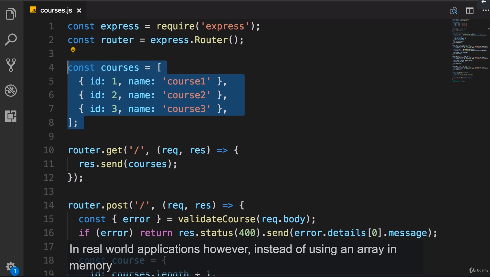
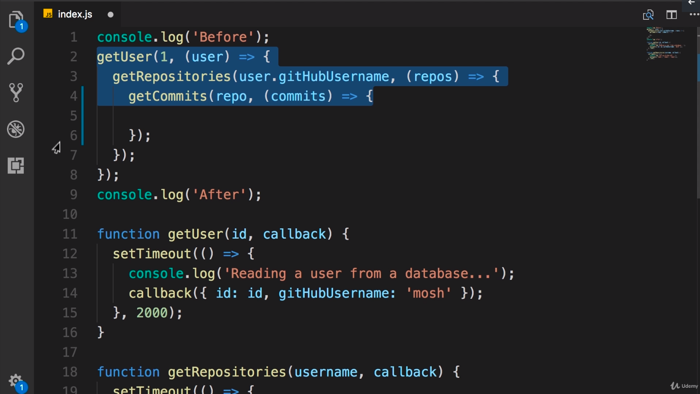
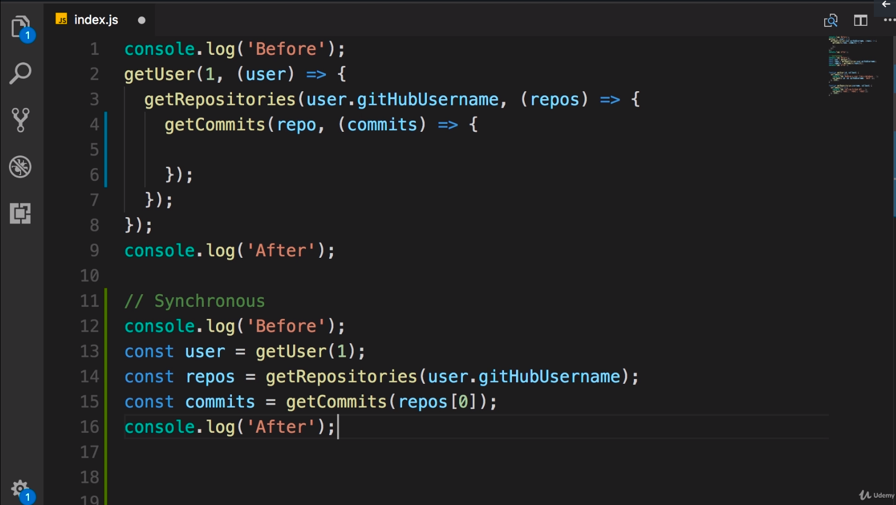
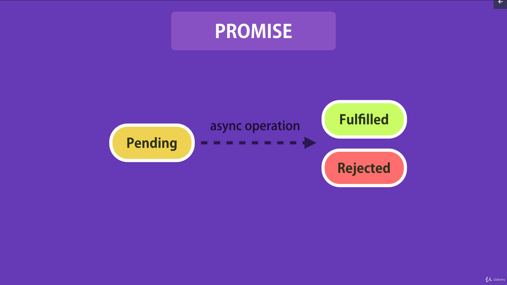
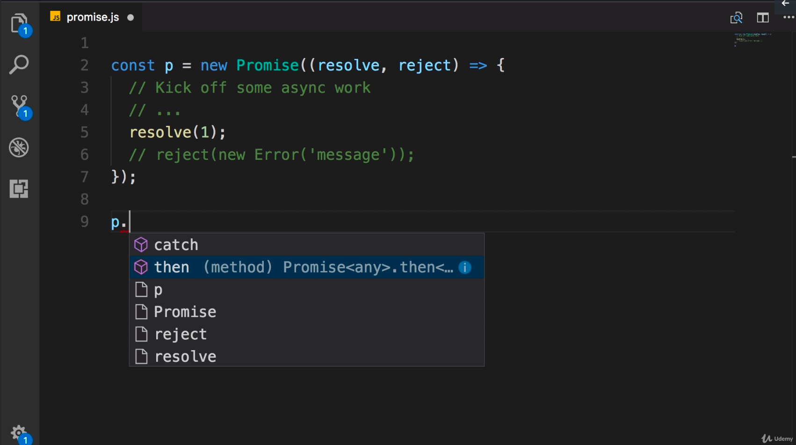

In the last section we used a simple array to manage our courses:

Fig 06-001
In real-world applications however instead of using an in memory array we use a database.
Before learning about database access we should ensure we have a good and in-depth
understanding of asynchronous programming.
Create a new project using:
npm init --yes
Fig 06-002
to accept defaults. Create a new file called index.js and add the following code:
console.log('Before');
console.log('After');
Fig 06-003
This is an example of a synchronous or blocking program. In this program when the code
executes the first line is blocking and the second line has to wait until the first line
finishes execution. These type of programs are known as synchronous or blocking.
In contrast we have asynchronous or non-blocking programs. An example of an asynchronous
program is as follows:
console.log('Before');
setTimeout(() => {
console.log('Reading a user from the database....'); }, 2000);
console.log('After');
Fig 06-004
The setTimeout takes two arguments, the first one is a function, the second is the time
interval to wait before executing the function. We will use this to simulate a call to a
database which takes two seconds.
When this program is executed some may think first the "Before" message will be
displayed, followed by a wait of two seconds, then the "Reading a user from the
database..." message, followed by the "After" message.
However that is not how this program will work. If you run the application from the
terminal you will see the following output:
Before
After
Reading a user from the database...
Fig 06-005
So "Before" and "After" are displayed immediately then we have a wait of two seconds
before "Reading a user from the database..." is displayed.
The setTimeout function is an example of an asynchronous or non-blocking function. When
we call this function it will schedule a task to be performed in the future - in this
example the arrow function containing the console.log command. It doesn't wait for that
task to be completed, it doesn't block it just schedules it and returns control which
leads to the code that display the "After" message being displayed.
One thing to make clear is that asynchronous does not mean concurrent or multi-threaded.
In this application we have a single thread which first executes the first line, then
schedules a function to be executed in two seconds, next it will display the "After"
message in the console. After that it will be free so two seconds afterwards it will
execute the arrow function and display the message in the console.
Earlier in the course we used the metaphor of a restaurant. So in a synchronous
restaurant the waiter comes to you, takes your order, gives it to the kitchen and then
sits there waiting till your food is ready before moving on to the next table. This is an
example of synchronous or blocking restaurants.
In contrast, in an asynchronous restaraunt, the waiter doesn't wait in the kitchen. So
while the chef is preparing your meal the waiter will move onto the next table to take
their order. What is important here is that we have a single waiter or waitress. This is
like a single thread in a program. So we don't have multiple threads, we don't have
concurrency.
Why do we need to know all this? Because in node programs whenever you are dealing with
an operation that involves disk or network access you are dealing with asynchronous code.
So we need to know how asynchronous code behaves. More importantly we need to know how to
write asynchronous code in a clean and maintainable way.
71 - Patterns for Dealing with Asynchronous Code
Now let's make the program from the previous lecture a little bit more real. So I'm going
to extract the setTimeout function to a new function called getUser adding a parameter of
id. We will also return a user object from the function call:
function getUser(id) {
setTimeout(() => {
console.log('Reading a user from the database....');
return {
id: id,
gitHubUsername: 'mosh'
}; }, 2000);
}
Fig 06-006
If we try and get the user like this:
const user = getUser(1);
console.log(user);
Fig 06-007
It won't work. The console.log function will write out undefined. The reason for this is
that the function that we pass to setTimeout is executed 2 seconds later. So what we are
returning from this function will not be available at the time we call getUser.
If we want to return a value from getUser we have to return it here:
function getUser(id) {
setTimeout(() => {
console.log('Reading a user from the database....');
return
{
id: id,
gitHubUsername: 'mosh'
};
}, 2000);
return 1;
}
Fig 06-008
This value of 1 will then be available on this line:
const user = getUser(1);
Fig 06-009
But that's not what we want because when accessing a database the result is not available
immediately - it may take 1/2 a second, 1 second, 5 seconds - who knows. That's why we are
using setTimeout - to simulate a long running operation. In this case we are reading
something from the database and at this point:
return {
id: id,
gitHubUsername: 'mosh'
};
Fig 06-010
the result will be ready.
So how can we access the user object from the main program? There are three patterns to
deal with asynchronous code.
callbacks
promises
async/await
Async/await is really just some syntactical sugar over promises.
72 Callbacks
In this lecture we will demonstrate how to use a callback to get the user object. We need
to make a small change to the signature of the getUser function, we need to add another
parameter called callback. callback is a function which we are going to call once the
result of an asynchronous operation is ready - like this:
function getUser(id, callback) {
setTimeout(() => {
console.log('Reading a user from the database....');
callback({
id: id,
gitHubUsername: 'mosh'
}); },
2000);
}
Fig 06-011
back in the main application we can delete the const user from
const user = getUser(1);
Fig 06-012
because we are not going to get a return value from the function any longer. Now our
getUser function needs a second argument. We need to pass a function that will be called
with this object:
{ id: id, gitHubUsername: 'mosh' }
Fig 06-013
So we can pass a function that takes a user:
getUser(1, function(user)
{ }
);
Fig 06-014
Now we have access to the user object that we have "read" from the database - so we can
display it on the console:
Let's imagine that once we read a user object from the database then we're going to look
at the gitHubUsername property and then we're going to call gitHub api to get the list of
repositories for this user. So create a function as follows:
function getRepositories(username)
{
return [ 'repo1', 'repo2', 'repo3' ];
}
Fig 06-019
This function is synchronous - we don't have any async code, there is no call to
setTimeout or anything asynchronous. Our job is convert this function to an asynchronous
function (that takes two seconds to complete) and then call it in the getUser function
once we have the user object. Use callback to get the list of repositories. Finally
display the repositories on the console.
To make the function asynchronous we use setTimeout and provide a callback function and a
timeout of 2 seconds:
Optionally we can add a console.log to the setTimeout function:
console.log("Calling GitHub API");
Fig 06-021
Finally we need to return the array or repos to the client or consumer of this function.
However, as you learned earlier, here we cannot return a value like this:
so we add a second parameter here - callback which is a function. We call this function
with our repos array.
Now we have an asynchronous function which takes a callback to return the result. Now
back in our main code after we get the user object we are going to get the repositories
for that user:
Now if you run the application you should see the following output:
Before
After
Reading a user from the database....
User { id: 1, gitHubUsername: 'mosh' }
Calling GitHub API
[ 'repo1', 'repo2', 'repo3' ]
Fig 06-025
So the "Before" and "After" messages are displayed immediately then 2 seconds later we
see "Reading a user from the database" then after another 2 seconds we see the array of
repos: [ 'repo1', 'repo2', 'repo3' ]
73 - Callback Hell
So if we look at the code from the previous lecture you will see a nesting structure is
starting to appear getUser, getRepositories etc.
When you nest several callback functions this nesting can make the code difficult to
read:

Fig 06-026
in comparison with synchronous implementations where the code wont get indented at
all:

Fig 06-027
The synchronous version is far easier to read and understand. This nesting that occurs
with callbacks is referred to as callback hell or the christmas tree problem.
74 - Named Function to Rescue
Let's look at a simple solution to resolve the callback hell problem:
The technique we are going to use is to replace an anonymous function with a named
function. What do we mean by this? Look at the second argument to the getCommits
function:
getCommits(repos, (commits) => {
});
Fig 06-029
This is what we call an anonymous function. A function that doesn't have a name. So we
are going to replace each anonymous function with a named function allowing us to flatten
the structure of the code.
We want to start at the deepest level and work up. We define a new function called
displayCommits:
function displayCommits(commits) {
console.log(commits);
}
Fig 06-030
then in the getCommits function we can pass a reference to this function:
getCommits(repos, displayCommits);
Fig 06-031
Note that we don't call the function, we just pass a reference to it.
We can apply the same technique to getRepositories and getUser functions. So in the
getRepositories method we have another anonymous function:
This anonymous function takes an array of repositories and then gets the commits for
those repositories. So let's create a function called getCommits with the same signature -
an array or repos. We also move the code we want to call into this function:
function getCommits(repos) {
getCommits(repos, displayCommits);
}
Fig 06-033
Then we can replace the anonymous function with a reference to our new named
function:
getRepositories(user.gitHubUsername, getCommits);
Fig 06-034
Ok, one more time, here is our last anonymous function:
So this anonymous function takes a user object and gets the repositories for that user.
So we create a function called getRepositories that takes a user and in the body of the
function we call getRepositories with the arguments from our last anonymous function above
(gitHubUsername and a reference to the getCommits function):
function getRepositories(user) {
getRepositories(user.gitHubUsername, getCommits);
}
Fig 06-036
This may look a little bit confusing at first because here we have a function called
getRepositories but inside this function we are calling another function that is also
called getRepositories. However, these two functions are different because the first one
takes a use object whilst the second function takes a string (gitHubUsername) and a
callback function.
Now we can replace the last anonymous function with a reference to getRepositories:
getUser(1, getRepositories);
Fig 06-037
Now we no longer have a deeply nested structure.
So we call getUser, when we have the user then we get the repositories for that user. In
the getRepositories function we pass the username and when we have the repositories we
call getCommits for one of the repositories. Similarly when we get the commits for one of
the repositories we display them to the console.
This approach is not ideal but it is better than before - at least we no longer have
callback hell.
75 - Promises
Javascript promises are extremely powerful when it comes to dealing with asynchronous
code. So what is a promise? A promise is an object that holds the eventual result of an
asynchronous operation. So when an asynchronous operation completes it can either result
in a value or an error. A promise, basically promises you it will give you the result of
an asynchronous operation.
This promise object can be in one of three states:
Initially, when we first create a promise, it will be in the pending state. At this
point it will kick off some asynchronous operation.
When the results are ready the promise can either be fulfilled or resolved which
basically means the asynchronous operation completed successfully so here we are going
to have a value.
If something went wrong during the execution of that asynchronous operation the
promise will be in the rejected state - in this case we will have an error

Fig 06-038
Let's see this in action. Add a new file called promises.js with the following code:
const p = new Promise()
Fig 06-039
This constructor function takes an argument - a function with two parameters:
const p = new Promise(function(resolve, reject) { });
Fig 06-040
So when creating a new promise we should create a function with two parameters - resolve
and reject. We can use the arrow function syntax here:
const p = new Promise((resolve, reject) => { });
Fig 06-041
In the body of this function we are going to kick off some async work - accessing a
database, calling a web server, start a timer etc.
Eventually when the async work completes we should either have a value or an error. If
there is a value then we want to return this to the consumers of this promise. So
somewhere in our code we will be consuming this promise because this promise object
promises us that it is going to give us the result of an asynchronous operation. So we
need to send this result to the consumer of this promise. The way we do that is by using
the resolve or reject parameters. Basically these two parameters are functions so we can
call resolve:
const p = new Promise((resolve, reject) => {
// Kick off some async work
// ...
resolve(1);
});
Fig 06-042
We are using resolve to send this value to the consumers of the promise object.
Alternatively if something goes wrong we want to return an error to the consumer of the
promise. In that case instead of the resolve function we call reject. We can pass an error
message to reject. In best practice, it is better to pass an error object instead of a
simple string:
const p = new Promise((resolve, reject) => {
// Kick off some async work
// ...
//
resolve(1);
reject(new Error('message'));
});
Fig 06-043
Let's imagine our asynchronous operation completes successfully and produces 1 as a
result:
const p = new Promise((resolve, reject) =>
{
// Kick off some async work
// ...
resolve(1);
// reject(new Error('message'));
});
Fig 06-044
In a real world application, instead of 1, we would have a user object that we read
from the database or something like that.
Now we need to consume this promise object somewhere else in the code. You will see it
provides two methods:
catch for catching any errors
then for getting the result of our asynchronous operation

Fig 06-045
So we call then and write the result to the console:
p.then(result => console.log('Result', result));
Fig 06-046
Run the application and you should see the following output:
Result 1
Fig 06-047
In this implementation there isn't any asynchronous work, we are simply resolving the
value immediately. Let's make this a little bit more real life by adding a setTimeout
function:
const p = new Promise((resolve, reject) =>
{
// Kick off some async work
// ...
setTimeout(() => {
resolve(1);
}, 2000);
//reject(newError('message'));
});
p.then(result => console.log('Result', result));
Fig 06-048
So now after 2 seconds this asynchronous operation will produce a value of 1.
Let's imagine that during the execution of this asynchronous operation something goes
wrong. So we want to return an error to the consumer of this promise. So instead of
resolve we use reject:
const p = new Promise((resolve, reject) =>
{
// Kick off some async work
// ...
setTimeout(() => {
//resolve(1);
reject(new Error('message'));
}, 2000);
});
p.then(result => console.log('Result', result));
Fig 06-049
We can chain .catch onto the end of our .then function to handle any errors:
p
.then(result => console.log('Result', result))
.catch(err => console.log('Error', err.message));
Fig 06-050
We simply write the error to the console. Each error object that we have in Javascript
has a message property. So the error message that we pass here:
new Error('message')
Fig 06-051
Will be stored in property called message.
If we run the application now we should see an error message:
Error message
Fig 06-052
So what you need to take away from this lecture is that anywhere you have an asynchronous
function that takes a callback you should modify that function to return a promise.
76 - Replacing Callbacks with Promises
This is the code using callbacks that we wrote earlier where callback hell is starting to
show:
console.log('Before'); getUser(1, (user) => { console.log('User', user);
getRepositories(user.gitHubUsername, (repos) => { console.log(repos); }); });
console.log('After');
function getUser(id, callback) { setTimeout(() => { console.log('Reading a user from the
database....'); callback({ id: id, gitHubUsername: 'mosh' }); }, 2000); }
function getRepositories(username, callback) { setTimeout(() => { console.log("Calling
GitHub API"); callback(['repo1', 'repo2', 'repo3']); }, 2000); }
In order to resolve the callback hell problem we should modify our asynchronous functions to
return a promise. We will start with getUser:
function getUser(id) { return new Promise((resolve, reject) => { setTimeout(() => {
console.log('Reading a user from a database...'); resolve({id: id, gitHubUsername: 'mosh'});
}, 2000); }); }
We return a new promise (the constructor of which takes an argument of a function which
accepts two parameters: resolve and reject). We use the resolve and reject parameters to
signal the result of an asynchronous operation or an error.
Again we use setTimeout to perform some async work. Finally we remove the callback
parameter:
getUser(id)
Now in order to return the user object to the consumer of the promise we use the resolve
function:
resolve({id: id, gitHubUsername: 'mosh'});
We apply the same technique to the getRepositories and getCommits methods:
function getRepositories(username) { return new Promise((resolve, reject) => { setTimeout(()
=> { console.log('Calling GitHub API...'); resolve(['repo1', 'repo2', 'repo3']); }, 2000);
}); }
function getCommits(repo) { return new Promise((resolve, reject) => { setTimeout(() => {
console.log('Calling GitHub Api...'); resolve(['commit']); }, 2000); }); }
Now none of our asynchronous functions here take a callback. Instead they return a promise.
77 - Consuming Promises
So here we have this asynchronous code that uses the callback approach:
getUser(1, (user) => { getRepositories(user.gitHubUsername, (repos) => {
getCommits(repos[0], (commits) => { console.log(commits); }) }) });
In this lecture I am going to show you how to rewrite this using promises:
getUser(1) .then(user => getRepositories(user.gitHubUsername)) .then(repos =>
getCommits(repos[0])) .then(commits => console.log('Commits', commits)) .catch(err =>
console.log('Error', err.message));
So we call getUser passing 1 as an argument. getUser returns a promise:
const p = getUser(1);
In the last lecture you learned the Promise object has two methods catch and then. We use
catch to catch errors and we use then to get the result of an asynchronous operation:
p.then()
The result of the asynchronous operation is a user object because in the getUser function we
are resolving this promise with a user object. So we pass a function that takes a user:
p.then(user => console.log(user));
and we write that user to the console. If we run the application at this point we see the
following in the terminal:
Before After Reading a user from a database... { id: 1, gitHubUsername: 'mosh' }
So after two seconds we read a user from the database and our user object is written to the
console. We can simplify this code by getting rid of the constant and chaining then to what
we get from the getUser function:
getUser(1) .then(user => console.log(user));
In our previous implementation once we got a user then we got the repositories for that
user. So let's modify the code so that instead of calling console.log we are going to call
getRepositories with an argument of user.gitHubUsername:
getUser(1) .then(user => getRepositories(user.gitHubUsername));
If the function that we pass to the then method returns a value then we will wrap that value
inside a promise. That means, if we return a value, we are going to have another promise:
getUser(1) .then(user => getRepositories(user.gitHubUsername)) .then(repos =>
getCommits(repos[0]))
So we call then on that promise as well. In this case the promise in question is the one
returned from the getRepositories function.
function getRepositories(username) { return new Promise((resolve, reject) => { setTimeout(()
=> { console.log('Calling GitHub API...'); resolve(['repo1', 'repo2', 'repo3']); }, 2000);
}); }
So getRepositories returns a promise and eventually it will resolve that promise with an
array of repositories. So we chain then on the second promise which, when resolved, will
give us an array or repositories. At this point we want to get the commits for the first
repository so we call getCommits passing the first repository as an argument.
getCommits(repos[0])
Once again the getCommits function returns a promise so we can chain then on that promise.
That promise, when resolved, will eventually have a list of commits for the given
repository. So here we pass a function:
.then(commits => console.log('Commits', commits));
If we run the program one more time:
Before After Reading a user from a database... Calling GitHub API... Calling GitHub Api...
Commits [ 'commit' ]
We get "Before" and "After" then two seconds later we get "Reading a user from a
database..." then two seconds later we get "Calling GitHub API..." once for getting the
repositories and again to get the list of commits. Then we see the array of commits.
Now look at the callback and the implementation that uses promises side by side:
console.log('Before');
getUser(1, (user) => { getRepositories(user.gitHubUsername, (repos) => {
getCommits(repos[0], (commits) => { console.log(commits); }) }) });
getUser(1) .then(user => getRepositories(user.gitHubUsername)) .then(repos =>
getCommits(repos[0])) .then(commits => console.log('Commits', commits));
console.log('After');
The first implementation used callbacks which resulted in the nested structure - the
callback hell problem. In the second implementation we use promises which gives us a much
flatter structure. This is the beauty of using promises because promises expose the then
method we can chain them to implement a complex asynchronous operation.
Finally, as a best practice, when we are working with promises we should make sure to catch
any errors. So at the end add a catch statement and just write the error to the console:
getUser(1) .then(user => getRepositories(user.gitHubUsername)) .then(repos =>
getCommits(repos[0])) .then(commits => console.log('Commits', commits)) .catch(err =>
console.log('Error', err.message));
With this implementation if an error occurs during any of the asynchronous operations the
function passed to the catch method will be called.
78 - Creating Settled Promises
So you have seen a taste of promises throughout this section. In this lecture we are going
to explore the API of a Promise object in Javascript in more detail.
Create a file called index.js. Sometimes you want to create a promise that is already
resolved - this is particularly useful when writing unit tests - so you want to simulate a
scenario where an asynchronous operation, like calling a web service, completes
successfully.
The Javascript Promise class has a static method called resolve which returns a promise
which is already resolved. We can optionally pass a value or a user object:
const p = Promise.resolve({ id: 1 });
This promise is already resolved so we can call the then method:
p.then(result => console.log(result));
get the result and display it on the console. If we run this program we will see the
following in the terminal:
{ id: 1 }
We see the user object that our promise holds. Similarly sometimes you want to create a
promise that is already rejected. If that's the case we simply call the reject method
instead of resolve passing an Error object:
const r = Promise.reject(new Error('reason for rejection...')); r.catch(error =>
console.log(error));
Now that our promise is rejected we call catch to get the error. We also rename result to
error.
If we run the application we should see the following output on the console:
Error: reason for rejection... at Object.
(C:\DevelopmentTutorials\TheCompleteNodeJSCourse\06-asynchronous-javascript\78-creating-settled-promises\index.js:4:26)
at Module._compile (module.js:653:30) at Object.Module._extensions..js (module.js:664:10)
at Module.load (module.js:566:32) at tryModuleLoad (module.js:506:12) at
Function.Module._load (module.js:498:3) at Function.Module.runMain (module.js:694:10) at
startup (bootstrap_node.js:204:16) at bootstrap_node.js:625:3
We see the "reason for rejection" message and the call stack that comes with every error
object in Javascript. This is the reason why, as a best practice, whenever you want to
reject a promise it's better to use a native error object because it will include the call
stack. If we were to pass a simple string instead:
const r = Promise.reject('reason for rejection...');
We wouldn't see the call stack show above.
79 - Running Parallel Promises
Sometimes you want to run a few asynchronous operations in parallel. When they all
complete you want to perform some action. For example, you may call the Facebook API and
the Twitter API and when the result of both these asynchronous operations are ready then
you want to return something to the client.
Let's simulate this:
const p1 = new Promise((resolve) => { setTimeout(() => { console.log('Async operation
1....'); resolve(1); }, 2000); });
const p2 = new Promise((resolve) => { setTimeout(() => { console.log('Async operation
2....'); resolve(2); }, 2000); });
In the above promises we exclude the reject parameter because we only need resolve in this
example. We call setTimeout again and give it a callback function and a timeout of two
seconds. We perform a simple console.log and then resolve the promise.
We then duplicate the code to create another promise which is our second asynchronous
operation. We resolve this promise with a value of 2.
Now we kick off both asynchronous operations and when they complete we do something:
Promise.all([p1, p2]) .then(result => console.log(result));
We call the all method (another method that is available on the Promise class). We give it
an array of promises. This method will return a new promise that will resolve when all the
promises in this array are resolved.
We get the promise and call then, get the result and display it on the console. Let's see
what happens when we run this application:
Async operation 1.... Async operation 2.... [ 1, 2 ]
So, we get two seconds delay then both asynchronous operations are kicked off at the same
time. Eventually we get the result which is an array of two numbers.
A few things to clarify.
Firstly, we don't have real concurrency or multi-threading. We are still dealing with one
thread but that thread is kicking off multiple asynchronous operations almost at the same
time - it's not exactly at the same time. First it starts Async operation 1, the thread is
released, so immediately after it starts the second Async operation. We don't wait for the
result of the first asynchronous operation to be ready in order to kick off the second
asynchronous operation. The situation we had in our previous example was that we got the
user object, then we got the repositories, then we got the commits for the first
repository. So each asynchronous operation started after the previous asynchronous
operation completed. That was different. In this implementation both the asynchronous
operations are started almost at the same time.
The second thing is that when we get the result it will be available as an array. In this
case each promise is resolved with a value - in this case 1 and 2. Our result array will
have two values 1 and 2.
Now what if one of these promises fails?
Let's change the first promise by adding a reject parameter, then instead of resolving,
let's reject it and pass an error:
const p1 = new Promise((resolve, reject) => { setTimeout(() => { console.log('Async
operation 1....'); reject(new Error('because something failed.')); }, 2000); });
Now, we add a catch method to get the error if one of our promises is rejected:
Promise.all([p1, p2]) .then(result => console.log(result)) .catch(err =>
console.log('Error', err.message));
Run the application:
Async operation 1.... Async operation 2.... Error because something failed.
It should be noted that if any of our promises is rejected, the final promise that is
returned from Promise.all is considered rejected.
One last thing, before we finish the lecture. Go back to our first promise and set it back
to resolve as before:
const p1 = new Promise((resolve) => { setTimeout(() => { console.log('Async operation
1....'); resolve(1); }, 2000); });
Sometimes we want to kick of multiple asynchronous operations but we want to do something
as soon as the first asynchronous operation completes. If that's the case use Promise.race
instead of Promise.all:
Promise.race([p1, p2]) .then(result => console.log(result)) .catch(err =>
console.log('Error', err.message));
Again pass an array of promises and as soon as one of the promises in the array is
fulfilled the promise that is returned from this race method will be considered fulfilled.
Let's see what happens when we run this application:
Async operation 1.... Async operation 2.... 1
Both our asynchronous operations are started but our promise was resolved as soon as the
first asynchronous operation completed. In this case the result we have is not an array -
it's the value of the first fulfilled promise.
80 Async and Await
Earlier, in index.js, you saw how we could rewrite
asynchronous code that used a callback based approach:
getUser(1, (user) => { getRepositories(user.gitHubUsername, (repos) => {
getCommits(repos[0], (commits) => { console.log(commits); }) }) });
to use promises:
// Promise-based approach getUser(1) .then(user => getRepositories(user.gitHubUsername))
.then(repos => getCommits(repos[0])) .then(commits => console.log('Commits', commits))
.catch(err => console.log('Error', err.message));
We then discussed how we could make this code even simpler. Now in Javascript we have a
new feature called Async and Await. If you are familiar with C# there we also have the
same feature.
Async and Await helps you write asynchronous like synchronous code. Let's illustrate what
I mean by this by rewriting the promise approach shown above using Async and Await.
// Async and Await approach async function displayCommits() { try { const user = await
getUser(1); const repos = await getRepositories(user.gitHubUsername); const commits =
await getCommits(repos[0]); console.log(commits); } catch (err) { console.log('Error',
err.message); } } displayCommits();
We call getUser. The getUser function returns a promise. Now anytime you're calling a
function that returns a promise you can await the result of that function - then get the
actual result just like calling a synchronous function:
const user = await getUser(1);
Now that we have a user object we can call getRepositories to get the repositories for
this user. The getRepositories function also returns a promise so we can await the result
and then store the repositories in a const:
const repos = await getRepositories(user.gitHubUsername);
Now that we have the repositories we can call getCommits passing the first repository.
Again because the getCommits function returns a promise we can await it and store the
commits in a const.
const commits = await getCommits(repos[0]);
Finally we can do a console.log of the commits:
console.log(commits);
So we can see with the await operator we can write asynchronous code that looks like
synchronous code. The code above is much easier to understand than the code in the
callbacks or even promises demos shown earlier. We don't have to go through a chain of
calls to the then method.
So this is await. But where is async. Well whenever you use the await operator in a
function you need to decorate that function with the async modifier. In this particular
example we have written this code block outside of a function. To satisfy the Javascript
engines requirement that whenever you use await you should have a function that is
decorated with async we define a function called display commits:
function displayCommits() { }
We can move our code block inside this function and decorate the function with async:
async function displayCommits() { const user = await getUser(1); const repos = await
getRepositories(user.gitHubUsername); const commits = await getCommits(repos[0]);
console.log(commits); }
Finally we can call this function:
displayCommits()
If you look at the return type of the function it returns Promise
. That means a promise that once fulfilled doesn't result in a value. Basically,
this is telling us that Async and Await are built on top of promises. They are
syntactical sugar in the language that allow use to write asynchronous code that looks
synchronous. Internally , when the Javascript engine converts this code, it's going to
convert the code to something like the example we saw earlier that used promises:
getUser(1) .then(user => getRepositories(user.gitHubUsername)) .then(repos =>
getCommits(repos[0])) .then(commits => console.log('Commits', commits)) .catch(err =>
console.log('Error', err.message));
So, even though our code looks synchronous, it does'nt execute synchronously. In other
words, when we are awaiting the result of this function:
const user = await getUser(1);
We are not really waiting or blocking in a synchronous fashion. So, in terms of the code
execution, when a Javascript engine executes this line:
const user = await getUser(1);
at this point it's going to release our thread to do other work. When the result of the
getUser function is available then we come back here:
const user = await getUser(1);
and store the result in the user const and call the second line:
const repos = await getRepositories(user.gitHubUsername);
Again we have await so the thread is released to do other work.
Let's run the application in the terminal:
Before After Reading a user from a database... Calling GitHub API... Calling GitHub
API... ['commit']
One last thing before we finish this lecture. In our promised based approach we used a
catch method to get any errors. When using Async and Await we don't have this catch
method - instead we use a try/catch block:
// Async and Await approach async function displayCommits() { try { const user = await
getUser(1); const repos = await getRepositories(user.gitHubUsername); const commits =
await getCommits(repos[0]); console.log(commits); } catch (err) { console.log('Error',
err.message); } } displayCommits();
So we try to run the code in our try block. If anything goes wrong we execute the code
in our catch block.
Now let's simulate an error in the getRepositories function by rejecting the promise:
function getRepositories(username) { return new Promise((resolve, reject) => {
setTimeout(() => { console.log('Calling GitHub API...'); //resolve(['repo1', 'repo2',
'repo3']); reject(new Error('Could not get the repos.')); }, 2000); }); }
Now run the application:
Before After Reading a user from a database... Calling GitHub API... Error Could not get
the repos.
So when using Async and Await you need to wrap your code inside a try/catch block.
81 - Exercise
In 12exercise-before.js we have some code that is written using
the callback based approach:
getCustomer(1, (customer) => { console.log('Customer: ', customer); if (customer.isGold)
{ getTopMovies((movies) => { console.log('Top movies: ', movies);
sendEmail(customer.email, movies, () => { console.log('Email sent...') }); }); } });
So we have the getCustomer function which takes an id of 1 and in the callback function
we get a customer object. We do a simple console.log. If the customer isGold we are
going to call getTopMovies which has another callback function. The argument here is the
list of movies. At this point we do another console.log and then finally we send an
email to this customer with the list of top movies. When we are done we have another
callback function which performs a simple console.log.
If we run the application:
Customer: { id: 1, name: 'Mosh Hamedani', isGold: true, email: 'email' } Top movies: [
'movie1', 'movie2' ] Email sent...
It takes about 4 seconds to get a Customer, then we get the top movies, finally we send
an email to this customer with the top movies.
To complete the exercise rewrite the code using Async and Await.
Solution -------- In order to use Async and Await we have to modify our getCustomer or
getTopMovies to return a promise. Once a function returns a promise then we can await
it.
Starting with the getCustomer function:
function getCustomer(id) { return new Promise((resolve, reject) => { setTimeout(() => {
resolve({ id: 1, name: 'Mosh Hamedani', isGold: true, email: 'email' }); }, 4000); }); }
First we remove the callback, then we return a new Promise passing a callback which is
called the executor. This function has two arguments - resolve and reject. We add our
async code to the promise. Finally instead of calling the callback function we call
resolve.
Now perform the same process with the getTopMovies function: - remove the callback -
return a new Promise - move the async code into the promise code block - replace the
callback with resolve
Finally perform the process with the sendEmail function.
So, we have modified our functions to return a promise, now let's go back to the main
code and rewrite that:
async function notifyCustomer() { try { const customer = await getCustomer(1);
console.log('Customer: ', customer); if(customer.isGold) { const movies = await
getTopMovies(); console.log('Top movies: ', movies); await sendEmail(customer.email,
movies); console.log('Email sent...') } } catch(err) { console.log('Error',
err.message); } }
First we call getCustomer(1) which returns a promise which can be awaited. We store the
customer in a const called customer. Next we do a console.log.
Next we check if customer isGold and if so we call getTopMovies, which again returns a
promise which can be awaited and stored in a const called movies. After that we do
another console.log. Finally we send an email passing the customers email and their list
of top movies. Again this returns a promise which we await. When done we do another
console.log.
As discussed before, whenever you use await your code should be inside a function that
is decorated with the async modifier.
We then call the function:
notifyCustomer();
Additionally we have added a try/catch block to the async notifyCustomer function.